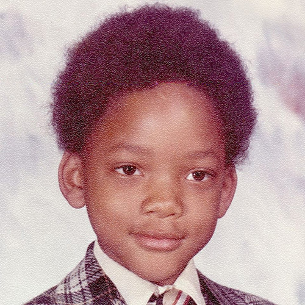
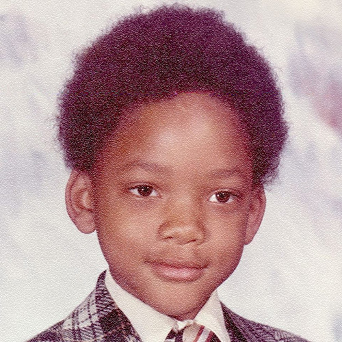

Início
Exercício pág 69 CPróximoAnterior
Crie uma página com uma imagem de uma criança (ex: "crianca.jpg") e um botão "Crescer". Crie uma função chamada trocar de Imagem. Nessa função, altere a propriedade 'src' da imagem para "adulto.jpg". Chame a função trocar Imagem no onclick do botão "Crescer". Escreva ainda um log no console com a mensagem "Imagem trocada com sucesso!".
Crescer

